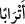

işlediklerinden dolayı cennet hûrilerinden daha üstündürler.
Hasan Basrî’den rivayet edildiğine göre, Aişe (r.anha) vâlidemizin yanında Âmir
oğulları kabilesinden çok yaşlı bir kadın: “Ey Allah’ın Rasûlü! Beni de cennetine
koyması için Allah’a duâ buyurun” diye dilekte bulundu. Peygamberimiz (s.a.) latife
ederek: “Ey filancanın anası, koca karılar cennete giremez” buyurdu. Bunun üzerine
yaşlı kadın ağlayarak geri döndü. Peygamberimiz (s.a.) hemen: “Ona haber veriniz, o
gün kendisi yaşlı bir kadın olmayacak, genç olacak” buyurdu ve meâlini verdiğimiz bu
âyet-i kerîmeyi okudu.[207]
Âyette geçen
(‘urub) kelimesi, kocasına düşkün, çok seven güzel kadın anlamındaki
arûb kelimesinin çoğuludur. Rusül kelimesinin resûlün çoğulu olması gibi. “Açıkladı”
anlamındaki __WORD__ (a‘rabe) fiilinden alınmıştır. Naz ve güzelliği ile kocasına sevgisini,
muhabbetini açıklayan kadın demektir.
Müfredat’da, bu kelimenin kocasına düşkün, hâli ile iffet ve muhabbetini açıklayan
kadın anlamında olduğu kaydedilmiştir. Bazı tefsirlerde, ‘uruben kelimesi, “sözleri,
konuşmaları arapça olan kadınlar” mânâsına olduğunu söylemişlerdir.
Âyet-i kerîmede geçen
(etrâb) kelimesi, aynı günde doğan, aynı yaşta olan
anlamındaki tirb kelimesinin çoğuludur. Bunlar, yaşta eşit yâni otuz üç yaşlarında
olacaklar; kocaları da aynı yaşta olacak. Boyları, babaları Âdem gibi altmış arşın,
enleri de yedi arşın olacak. Tüyleri bitmemiş, gözleri sürmeli olan bu gençlerin en
güzelleri dolunay gibi güzel olacak. En sonuncusu bile gökteki parlak yıldız gibi güzel
olacak. Bu genç erkek, yüzünü eşinin ayna gibi yüzünde, genç kadın da yüzünü genç
eşinin güzel yüzünde görecektir. Onlarda tükürme ve sümkürme gibi şeyler olmaz.
Dolayısıyla bundan daha rahatsız edici durumlardan uzak oldukları tabiidir.
Bir hadis-i şerifte: “Bir erkek bir sabahta yetmiş bâkire ile birleşir ve Cenâb-ı Hak
onları yeniden bâkireler olarak yaratır”[208] buyrulmaktadır.
Yine Rasûl-i Ekrem (s.a.)’in şöyle buyurduğu rivayet edilmiştir: “Cennet halkından
olan bir erkek beş yüz hûrî, dört bin dul ve sekiz bin bâkire ile nikahlanır. Her birini
dünyadaki ömrü kadar kucaklar.”[209]
Tibyan’da şöyle denmektedir: Çocukları cennete koyar, aynı yaşa getirir ve onlara
eşler verirler. Yaşlıları da aynı yaşa döndürülür, dünyada eşi yoksa cennet ehlinden
birini ona verirler. Firavun’un karısı gibi dünyada bir eşe sâhip olup ta eşi cennetlik
olmayanlara cennetten bir eş verilir. Eğer eşi cennetlikse onu yeniden kendisine
verirler. Kadın birden fazla koca ile evlenmişse onların hepsi de cennetlikse başka bir
kocaya nişanlanır.
Bir hadis-i şerifte şöyle buyrulmuştur: “Cennet halkının en aşağı durumda olanın
seksen bin hizmetçisi, yetmiş iki hanımı olup onun için San’â ile Câbiye denilen iki
belde arasındaki mesafe büyüklüğünde yakut, zeberced ve inciden kubbeli bir köşk
kurulur.”[210] Câbiye, Şam sınırları içindeki bir şehir, San’â da Yemen şehirlerinden
biridir. Her iki şehir de ağaçları ve akar suları bol olması yönünden Şam’a benzerler.